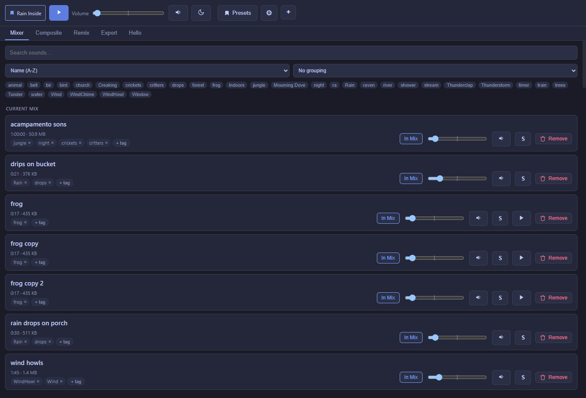

The Mixer
Your sound library, your current mix, and the master controls — the tab you'll spend most of your time on.

The toolbar
- Preset indicator — shows which preset (if any) the current mix is built from.
- Play all — starts or stops every sound currently in the mix at once.
- Volume — the master volume for the whole mix. It's bipolar: the center is a sound's own recorded level, drag left to quiet it down, right to boost it.
- Sleep timer (the moon icon) — see the Sleep timer page.
- Presets — save the current mix, or load/delete a saved one.
- Settings (gear icon) — auto-update, eager-baking, and other app-wide options.
- + — every way to add a new sound (see Getting started).
Your sound library
Every sound you've ever added lives here, whether or not it's currently in your mix. Each row shows the sound's name, length, and file size, its tags, an In Mix toggle, a volume slider, mute, solo, and remove.
Search, sort, and group
A search bar filters the library by name. A sort dropdown covers name, date added, date created, or a custom drag-to-reorder order. A grouping dropdown can organize the list alphabetically, by date, by tag, or by Sound Group (with an "Ungrouped" section for anything left out).
Editing several sounds at once
A "Select…" button turns on a checkbox next to every sound. With a few checked, a bar appears with the same one-click effect presets Remix has (Muffled, Distant, Reverb, etc.) plus Reset filters — click one and it applies to every selected sound at once instead of opening each in Remix by hand. Each sound's own EQ is left untouched either way; only the same fields a Remix preset would touch (highpass/lowpass/gain/echo/reverb) change.
Tags
Add or remove tags freely on any sound; a tag filter bar along the top lets you narrow the list to just sounds with a tag you click (the active filter lights up so it's clear what you're looking at). Tag autocomplete matches your existing tags as you type.
Currently playing, automatically
Whatever's actually making sound right now automatically floats to the top of the list, loudest first — no toggle to remember, it just reflects reality. A "Current Mix" group sits just below that: sounds that are in your mix but not currently playing (for example, while the mix is paused).
Three ways a sound can play
Set in the Remix tab, per sound:
| Mode | What it does | Good for |
|---|---|---|
| Loop | Plays continuously, looping seamlessly at a trim point you choose (or the whole file). | Rain, wind, drones — anything meant to run the whole time. |
| Random Interval | Replays a short clip at a randomized gap, with a randomized pitch each time. | A creak, a bird call, a distant thunderclap — something that shouldn't loop back-to-back. |
| Scheduled | Fires at real clock times you set — a specific time of day, or a repeating interval. | An hourly chime, a church bell at noon and midnight. |
Sound Groups
Right-click any sound in the Mixer to add it to a Sound Group, or create a new one — a small, distinctly-colored badge right next to the sound's name shows which group it belongs to. See the dedicated Sound Groups page for what a group actually does.
Presets
A preset remembers which sounds are included and each one's volume — and Noctívago always has one loaded, so you're never editing a mix that isn't attached to anything. Editing a loaded preset (adding/removing sounds, changing a volume) saves back into it automatically after a short pause, so there's no separate "save" step to remember mid-session. That autosave can be switched off from the Presets window if you'd rather save by hand with the "Save … now" button instead.
Creating a new preset gives you two starting points: New blank preset (starts completely empty) or Save current mix as new preset (a full copy of what's currently loaded — sounds, volumes, whole-mix filters/EQ, and Sound Groups included).
A sound can behave differently per preset
Trim, filters, EQ, speed/pitch, play mode, and randomization settings you edit in Remix apply to that sound within whichever preset is currently loaded — not globally. Tweak a shared sound while Preset A is loaded, and only Preset A's copy changes; load Preset B and it still sounds like whatever Preset B last had (or a plain default, if Preset B never touched that sound). Editing a sound that isn't part of the current preset's mix still changes its shared default for anything that hasn't overridden it — Remix tells you when that's what's about to happen.
To move a preset to another computer or share it with other users, see Presets & sharing.
If the app restarts
Noctívago remembers your master volume, which preset was active, and (if it was playing when you closed it) resumes the same mix automatically the next time it opens.